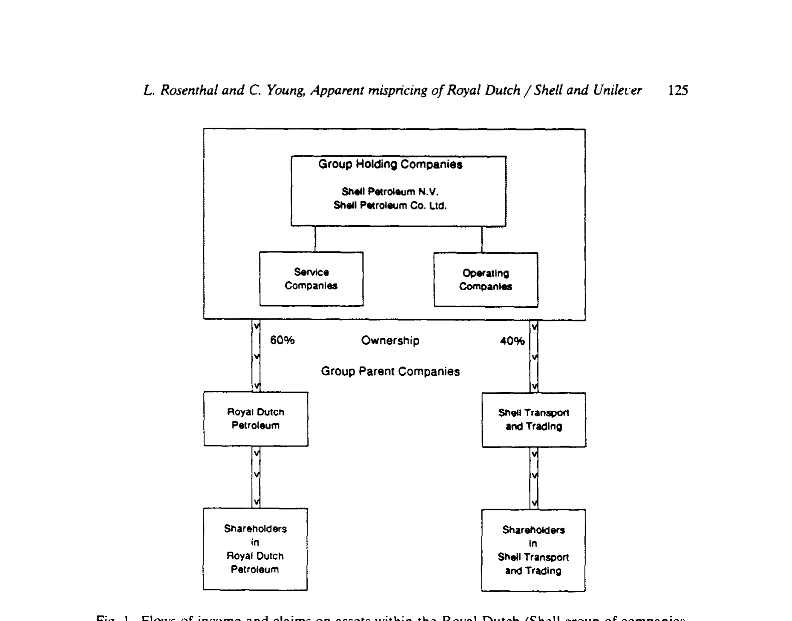
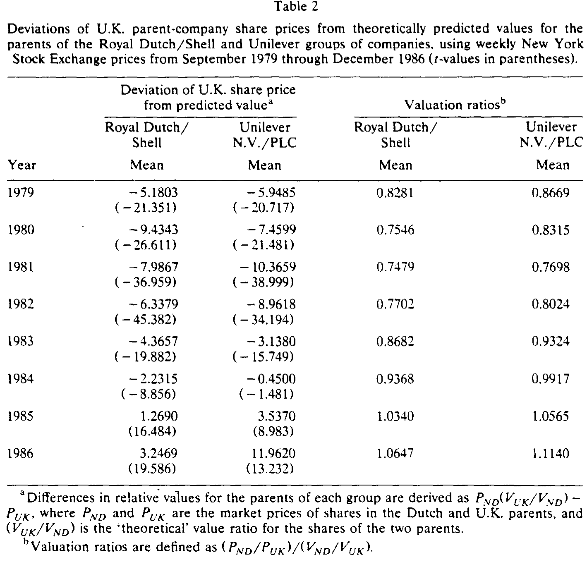
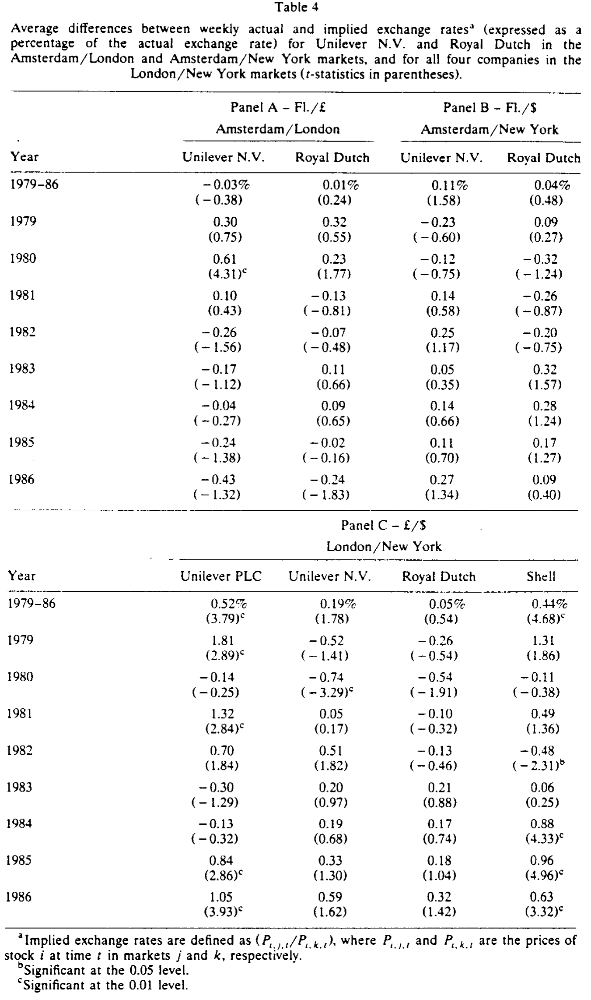
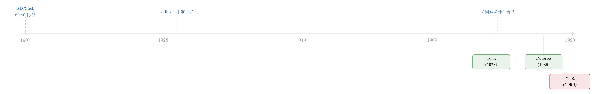

章程把比价钉死在 60∶40，市场却偏偏不认账
本文读的是 Rosenthal & Young (1990, Journal of Financial Economics)：Royal Dutch/Shell 与 Unilever N.V./PLC 这两对「连体双胞胎」公司，章程白纸黑字把彼此的现金流索取权钉死在固定比例上，因此它们的股价本应严格按这个比例联动。可作者发现，无论在纽约还是伦敦，实际价格都持续偏离理论比价，幅度一度高达近 28%，且两对股票、两个市场的偏离方向竟然如出一辙。然而——这才是真正吊诡之处——把这道「免费午餐」端到交易桌上，扣掉成本后却一分钱也赚不到。
1 引言：一道几乎不可能做错的考题
有效市场假说里有一句话，说出来人人都点头：现金流相同、风险相同的两份资产，价格也应该相同。这就是 一价定律 (law of one price)。它听上去像废话，可一旦想拿真实数据去检验，立刻会撞上一堵墙——你怎么知道两家公司的现金流「真的」相同？利润、风险、增长，哪一样都对不齐。于是绝大多数所谓的「定价异象」，最后都被归结成「也许它们本来就不一样」。联合假设问题(joint hypothesis problem)像一团雾，把检验者死死缠住。
可偏偏有那么两对公司，把这团雾彻底吹散了。
Royal Dutch Petroleum（荷兰，下称 Royal Dutch）和 Shell Transport and Trading PLC（英国，下称 Shell），早在 1907 年就签下协议，把整个集团的净资产、股利与利息收入，按 60∶40 的比例分给两家母公司的股东。Unilever N.V.（荷兰）和 Unilever PLC（英国）则从 1930 年起靠一纸 平准协议 (equalization agreement) 绑在一起，让两边股东拿到的现金流「尽可能完全相同」。
换句话说，这两对公司的相对现金流，不是市场猜出来的，而是公司章程一字一句规定死的。这就把那道几乎不可能做对的考题，简化成了一道小学算术：既然 Royal Dutch 拿 60、Shell 拿 40，那两者的股价比例就该等于这个分配比（再除以各自的股数）。市场只要会做除法，就不该出错。
那么问题来了：市场，做对了吗？
2 背景：两台「按比例分钱」的机器
先看 Royal Dutch/Shell。两家公司各自独立，分别在荷兰和英国注册，但它们唯一的资产，就是两家集团控股公司各 60% 和 40% 的股份。控股公司下面才是真正干活的运营公司，利润沿着这条链条一路向上分红。于是任何一家母公司的股东，握住的都是对同一池资产的、按比例的索取权。

Figure 1: Flows of income and claims on assets within the Royal Dutch/Shell group of companies
Unilever 那对则更彻底。N.V. 与 PLC 共用同一套董事会，平准协议规定：每 fl 面值的 PLC 普通股所分的股利，要等于每 Fl. 12 面值的 N.V. 普通股所分的股利；连清算时的剩余财产，也按同样的口径在两边股东之间平分。两家公司的资产虽未合并，但协议保证「在一切情形下，两边股东的现金流尽可能完全相等」。
接着，一个自然的问题是：这些「比例」翻译成股价，到底该是多少？这就要看各自发了多少股。Royal Dutch 发了 268 百万股，Shell 发了 1,104.8 百万股。给定 60∶40 的分配，每股索取权的「乘数」分别是
$$V_{RD} = \frac{0.6}{268\text{m}}, \qquad V_{ST} = \frac{0.4}{1104.8\text{m}},$$
于是在伦敦市场上，一股 Royal Dutch 理应值
$$V_{RD}/V_{ST} = 6.184$$
股 Shell。而在纽约，一份 Shell ADR 等于四股普通股，比值就缩成 1.546。同理，Unilever 在纽约的理论比价 \(V_{UN}/V_{UL}=5/3\)，在伦敦则是 4。
这些数字不是估出来的，是章程加股数算出来的。市场只要不犯傻，就该围着它们转。
3 识别策略：把「错误定价」写成一个可以检验的数
怎么把「市场有没有按比例定价」变成一个能做 t 检验的量？作者搭了一个极简的价格形成模型。设荷兰母公司与英国母公司在 t 时刻的股价分别是 \(P_{ND,t}\) 和 \(P_{UK,t}\)，令 \(\mu_t\) 为集团在 t 时刻的「真实」总市值，\(V_{ND,t}\)、\(V_{UK,t}\) 为把总市值换算成单股价值的乘数，\(\delta_t\)、\(\delta_t'\) 是各自偏离真实值的噪声：
$$P_{ND,t} = V_{ND,t}\,\mu_t + \delta_t \qquad (1a)$$
$$P_{UK,t} = V_{UK,t}\,\mu_t + \delta_t' \qquad (1b)$$
如果价格是真实价值的无偏估计，那么
$$E(\delta_t) = 0, \qquad E(\delta_t') = 0. \qquad (2)$$
然后，真正关键的一步在于：把 (1a) 解出 \(\mu_t\)，再代回 (1b)，让那个谁也看不见的「真实市值」\(\mu_t\) 彻底消失。剩下的，就是一个完全由可观测价格和已知乘数组成的量：
这个 \(\varepsilon_t\) 衡量的，是英国母公司的股价，相对于「用荷兰股价乘以理论比价」所预测出来的水平，偏离了多少。把 (1a)(1b) 代进去可以看到，它其实是两边噪声的一个线性组合：
$$\varepsilon_t = \delta_t\frac{V_{UK}}{V_{ND}} - \delta_t'.$$
由于 \(\varepsilon_t\) 是两个（假定服从正态分布的）变量的线性组合，对它做一个简单的 t 检验，就能判断它是否显著异于零。若显著不为零，我们就拒绝「市场按比例定价」这一假设——同时，也就间接地拒绝了 (1a)、(1b)、(2) 这一整套联合假设。
为了让幅度更直观，作者还定义了一个 估值比 (valuation ratio)，即把观测到的价格比，除以理论比价：
$$\text{Valuation ratio} = \frac{P_{ND,t}/P_{UK,t}}{V_{ND}/V_{UK}}.$$
定价无误时，它应当恰好等于 1.0。低于 1，说明英国股相对荷兰股被高估；高于 1 则相反。
于是检验被整理成四条假设：H1（Royal Dutch 与 Shell 满足理论比价）、H2（两个 Unilever 满足理论比价）、H3（Royal Dutch 与 Shell 的收益率分布相同）、H4（两个 Unilever 的收益率分布相同）。前两条问「价格水平对不对」，后两条问「收益率动不动得一样」。
4 数据
纽约证交所的价格与收益率取自 CRSP 日度文件；伦敦与阿姆斯特丹的价格取自伦敦《金融时报》。所有价格都对资本分配做了调整，日收益率再复合成周收益率。样本期为 1979 年 9 月至 1986 年 12 月——这个起点选得很讲究：它正好落在美国取消利息平准税、以及英国 1979 年 8 月解除外汇管制之后，从而排除了跨境资本流动受限这一干扰。
5 主要结果：一个持续了五年、高达近三成的缺口
先看 Royal Dutch/Shell 在纽约的结果（表 2 第二列）。1979 到 1984 年，\(\varepsilon_t\) 的年度均值统统为负，意味着 Shell 的股相对 Royal Dutch 被持续高估；到了 1985、1986 年才翻正。而且这些偏离不是噪声级别的：1980 年均值 −9.4343（t = −26.611），1981 年 −7.9867（t = −36.959）。所有年份的均值都显著异于零，H1 被干净利落地拒绝。

Table 2
换算成估值比就更触目惊心：1981 年 Royal Dutch/Shell 的估值比只有 0.7179——也就是说，市场给两边的相对定价，偏离章程规定的比例近 28%。Unilever 那对几乎是同一个故事的复刻：1981 年估值比 0.7698（\(\varepsilon_t\) 的 t = −38.999），到 1986 年又冲到 1.1140。除了 1984 年那一个 t 值仅为 −1.481 的例外，H2 在所有年份都被拒绝。
更耐人寻味的是「同步性」。两对公司的估值比，时间路径高度相似——同涨同跌，缺口在 1979 年 9 月到 1983 年 12 月之间最为夸张。这不是某只股票自己出了岔子，而是一种系统性的、跨标的、跨市场的偏离。
那么 H3、H4 呢？这里出现了一个微妙的分叉。无论 Royal Dutch/Shell 还是 Unilever，配对股票的平均周收益率都没有显著差异（表 3）——这并不奇怪，毕竟长期看它们绑在同一池现金流上。但方差不同：纽约市场上，Unilever 那对在大多数年份方差显著不等，而英国股的方差更高。作者的解释很朴素：美国投资者持有的英国股比例极低（见表 1，Shell 仅约 7%、Unilever PLC 不到 1%），交易稀薄，自然抖得更厉害。
这个解释要成立，就得有一个可证伪的推论：在所有股票都活跃交易的伦敦市场，方差差异应该消失。作者照做了——伦敦的检验里，H1、H2 同样被拒绝（结果与纽约高度一致），但 H3、H4 的方差差异在任何一年都不再显著。这一正一反，恰好把「价格比的持续偏离」与「收益率方差的差异」分了家：前者是真实的、跨市场共有的现象，与交易稀薄无关；后者才是纽约市场英国股流动性差的副产品。
6 反转：看得见，却吃不到
读到这里，任何一个交易员都会跳起来：近三成的偏离、持续五年、几乎无风险——这不是天上掉下来的钱吗？做多被低估的那只、做空被高估的那只，建一个 价差头寸 (spread position)，几乎没有市场风险，坐等价格回归就行。
但真正关键的一步在于：把成本算进去。
作者真的去算了这笔账。1979 年 9 月建仓、持有到错误定价被纠正，Royal Dutch/Shell 这个组合的持有期回报约 22%，Unilever 约 16%。听上去不错？可佣金加上「跨越价差」的交易成本，就要吃掉 6%–8%；而这笔钱整整压了五年多，折成年化只有 2%–3%，连为多头头寸融资的利息都盖不住。所谓「免费午餐」，端上桌时早已凉透。
短线规则同样令人沮丧。每周买入相对便宜的那只、做空另一只，下周平仓再重建头寸——即便假设没有任何摩擦、还能直接动用卖空所得去融资多头（这已经是「最大可能收益」的乐观情形），年化回报也只在 −12.28%（Royal Dutch/Shell，1980）到 +23.52%（Unilever，1982）之间剧烈摆动，均值分别是 4.12% 和 4.88%，且没有任何一年显著异于零。
那么换个市场套利呢？同一只股票在两国交易，价格之比理应等于汇率。作者用
$$X_{j,k,t} = \frac{P_{i,j,t}}{P_{i,k,t}} \qquad (4)$$
定义两市场间的隐含汇率，再用
$$W_{i,j,k,t} = X_{j,k,t} - \frac{P_{i,j,t}}{P_{i,k,t}} \qquad (5)$$
度量它对实际汇率的偏离。结果（表 4）大多很小。唯一的例外，是英国公司股票在伦敦与纽约之间的定价：纽约的英镑/美元隐含汇率系统性地偏高，Unilever PLC 偏离 0.52%（t = 3.79）、Shell 偏离 0.44%（t = 4.68），都显著为正。

Table 4
可这点缝隙，也填不进利润。作者把它对上了英国的 印花税 (transfer tax)——这笔税在样本期里从 2% 一路降到 0.5%。把税率叠上去，那点跨市场价差恰好被交易成本和税收抹平。对 Unilever PLC 来说，footnote 里还藏着另一重故事：Leverhulme Trust 持有的那部分股本（1984 年 1 月前高达 PLC 普通股的 18%，股利被放弃却仍是一份对资产的索取权），给它的相对估值蒙上了一层挥之不去的不确定性。
于是反转完成了：错误定价是真实的、巨大的、持久的；但它不可被套利。法律意义上的「一价定律」失灵了，经济意义上的市场效率却安然无恙——对单只证券而言，跨市场的价格仍然「一价」。
7 文献脉络
这条研究的脉络，本质上是在问同一件事：当我们能够确知两份现金流之间的关系时，价格到底听不听话？
最早把这种「可观测的相对索取权」当作天然实验的，是 Long (1978) 对现金股利市场价值的研究；Poterba (1986) 则借 Citizens Utilities 一家公司同时发行现金股利股与股票股利股的特例，重新检验了股利的市场估值。作者在引言里明说，本文「与 Long (1978) 和 Poterba (1986) 一脉相承」——三者共享同一种识别思路：找到一个章程或制度替你锁死了相对价值的场景，再看市场认不认。

Royal Dutch/Shell 和 Unilever 把这个思路推到了极致：现金流比例不是 60∶40 这么简单地写在章程里，而且标的是市值巨大、交易活跃、跨三国上市的蓝筹。值得一提的是，本文的审稿人正是 Kenneth Froot——日后他与人合作，把这对「连体股」做成了行为金融里被反复引用的经典案例。这篇 1990 年的论文，正是那条线索的源头之一：它第一次系统地记录下，连最干净的一价定律，也会在真实市场里持续地、却又无利可图地破裂。
（关于「同一份现金流卖出两个价格、套利却迟迟不来」的更现代的讨论，可参见《同一份现金流，两个价格：当「借不到的券」撑开了期权与股票的裂缝》与《无风险的钱就在眼前，他们却宁愿再等等——「同步风险」与被推迟的套利》；而把「同一标的两地不同价」与市场分割联系起来，则可看《同一只股票，外国人偏要多付一成——泰国「外资板」里的市场分割》。）
8 评论与延伸（Q&A + 研究方向）
(a) 几个可能的疑问
Q：这和「市场分割」造成的两地差价是一回事吗？
不完全是。市场分割讲的是「同一只股票在 A 国和 B 国卖出不同价格」，通常归因于资本管制、税收或投资者结构差异。本文的核心偏离是另一种：同一个市场内部，两只本应严格成比例的股票，价格比却偏离了章程值。作者特意把样本起点放在外汇管制解除之后，又同时在纽约和伦敦两个市场里观察到方向一致的偏离，正是为了说明这不是简单的跨境分割，而是更深一层的相对定价失灵。
Q：会不会其实两边现金流并不真的相同，模型设错了？
这正是本文最坚实的地方。多数定价异象败在「联合假设」上——你永远不能确定两份现金流真的可比。但 60∶40 和平准协议是写进公司章程、报给 SEC 的 20-F 文件里的法律事实，相对现金流的比例几乎没有解释空间。这让 \(\varepsilon_t\) 的显著性极难被「基本面本来就不一样」搪塞过去。
Q：近三成的偏离都套不出利？是不是成本算得太保守了？
作者反而是往「乐观」方向算的：短线规则里甚至假设了零摩擦、且能直接动用卖空所得融资多头——这是高估收益的设定。即便如此，年化回报仍不显著异于零；而长线价差头寸的 22% 回报，摊到五年多里再扣 6%–8% 的成本，连融资利息都不够。结论因此更稳：不是没算够成本，而是这点偏离本就配不上一笔可执行的套利。
Q：为什么偏离会持续这么多年而不被纠正？
论文没有给出一个完整的「为什么不收敛」的理论，但它的证据指向一个朴素答案：纠正需要资金长期占用，而回报盖不住资金成本，于是没有理性套利者愿意去做这件「稳赚却不划算」的事。这与后来「有限套利」文献的核心直觉完全吻合——错误定价能持续，恰恰是因为消灭它无利可图。
Q：H3/H4 里纽约和伦敦结果不同，会不会反而动摇了主结论？
恰恰相反，它加固了主结论。价格比的偏离（H1/H2）在两个市场里都被拒绝、方向一致，说明它与「纽约英国股交易稀薄」无关；而收益率方差的差异只在纽约出现、在活跃的伦敦消失，正好把流动性效应单独隔离出来。两套检验各司其职，反而让「偏离是真实的、方差差异是流动性的」这一判断更干净。
Q：印花税真能解释跨市场那点偏离吗？
只能解释一部分，而且是较小的那一部分——即英国股在伦敦/纽约之间的隐含汇率偏离。把 2% 降到 0.5% 的印花税叠上交易成本，恰好覆盖了那 0.4%–0.5% 的缺口。但它解释不了同一市场内部高达近三成的相对定价偏离；后者至今仍是开放问题。
(b) 几个可能的研究问题与提案
1. 把「连体股」缺口当成有限套利的天然刻度尺
【经济故事】既然两只股票的相对基本面被章程锁死，那么 \(\varepsilon_t\) 就是一把几乎不含基本面噪声的「错误定价温度计」。它的时间变化，应当只反映套利资本的供给与摩擦。把它和套利者的资金状况、融资成本、卖空难度对齐，能直接检验「有限套利」理论。 【可行性】高。连体股案例有限但数据干净，且可与同期信用利差、回购利率、券源紧张程度等套利成本代理变量匹配。识别上靠时间序列共变，需注意结构断点（如 Leverhulme Trust 持股变化）。
2. 缺口与流动性的双向关系
【经济故事】本文已发现纽约英国股因交易稀薄而方差更高。一个自然的延伸是：错误定价的幅度是否也随两只股票的相对流动性而变？当被低估的那只更难交易时，缺口是否更大、更持久？这把「流动性」从收益率方差推进到价格水平。 【可行性】中。需要逐周的成交量、买卖价差、换手率数据；连体股样本量小，统计功效有限，宜与其他跨市场双重上市样本合并。
3. 信用市场里有没有「连体债」？
【经济故事】同一发行人若有两只契约条款几乎相同、仅在某一维度（如上市地、计价货币、抵押安排）存在差异的债券，它们的相对价格也该被锁定。检验信用市场的一价定律，并把缺口拆成流动性溢价与套利摩擦两块，对理解危机期的公司债定价尤其有价值。 【可行性】中。可用 TRACE 与跨境债券数据库构造「准连体债」配对；难点在于找到基本面足够可比的配对，且要控制 specialness、回购成本等。
4. 外资持有人结构如何放大或抑制缺口
【经济故事】表 1 显示英国股在美国持有比例极低。一个值得追问的问题是：持有人国别结构的变化，是否预测了缺口的方向与幅度？若「本地偏好」让某一边长期供过于求，缺口就可能被需求结构而非基本面驱动。 【可行性】中。需要按国别拆分的持股面板（年报、20-F）。连体股恰好提供了一个把「持有人结构」与「相对定价」直接对接的窗口，识别策略可借助持股结构的外生变动（如指数纳入、外资准入放开）。
9 我的判断
这篇论文的贡献，不在于发现了一个能赚钱的异象——恰恰相反，它的力量在于发现了一个赚不到钱的异象。它用两对几乎不可能被「基本面不同」搪塞的连体股，把一价定律检验从联合假设的泥潭里拔了出来：法律意义上的一价定律明确失灵（近 28% 的持续偏离、t 值动辄三四十），可经济意义上的市场效率却毫发无损（任何可执行的交易规则都无利可图）。把这两件看似矛盾的事并置在一起，本身就是一次概念上的澄清——它预告了日后「有限套利」整套理论的核心直觉。
要说对识别的担忧，有两点。其一，方法偏旧：t 检验假定 \(\varepsilon_t\) 正态、且未处理周收益率序列里几乎必然存在的自相关与异方差，这会让那些惊人的 t 值被高估；用今天的标准误（如 Newey-West）重做，显著性大概会缩水，但近三成的幅度本身不会被抹掉。其二，「套不出利」的结论高度依赖作者对交易成本与融资成本的具体假设，尤其是卖空所得能否动用这一关键摩擦——不同年代、不同投资者，这道约束松紧不一。
后续我最想看到的，是把 \(\varepsilon_t\) 当成一把套利资本的「应力计」，逐周地与融资成本、券源、套利者资产负债表对齐，去回答那个本文提出却未解的问题：明知是缺口，资本为什么迟迟不来填？这正是连体股留给我们最值钱的东西——一个干净到近乎残酷的、关于市场为何「明知故犯」的实验场。
参考文献
Long, J., 1978. The market value of cash dividends: A case to consider. Journal of Financial Economics 6, 235–264.
Poterba, J.M., 1986. The market valuation of cash dividends: The Citizens Utilities case reconsidered. Journal of Financial Economics 15, 395–405.
Rosenthal, L., Young, C., 1990. The seemingly anomalous price behavior of Royal Dutch/Shell and Unilever N.V./PLC. Journal of Financial Economics 26, 123–141.